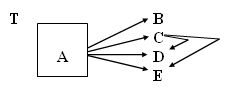
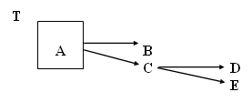
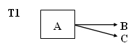
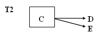

6. Tercera Forma Normal (3FN)
|
Una taula es diu que està en 3FN si i només si es compleixen dues condicions:
|
Açò vol dir que un atribut secundari només es pot conèixer a través de la clau principal o claus candidates de la taula i no per mig d'un altre atribut no primari.
En el graf de dependències només han de mostrar-se les dependències transitives i no aquelles dependències funcionals a partir de les claus candidates, perquè se sap que per ser claus ja coneixen tots els atributs.
Exemple: A és la clau principal, B és una clau candidata i es donen les següents dependències:
A → B B → A C → D
A → C B → C C → E
A → D B → D
A → E B → E
El graf queda del següent mode:
|  |
O bé |
 |
Les fletxes que mostren les dependències funcionals que té la clau candidata B no es representen (com hem dit anteriorment) perquè són evidents i no simplifiquen la visió del graf. A més a més, per a la normalització, no es necessiten per a res; pel contrari, solen complicar l'anàlisi.
La taula T no està en 3FN ja que els atributs D i E són transitivament dependents respecte de la clau A.
Posar en 3FN
Per a normalitzar una taula que no estiga en tercera forma normal, és a dir, que tinga dependències transitives, descompondrem la taula en més d'una taula:
A) Una primera taula amb la clau principal més els atributs que no depenen transitivament

B) Una segona taula amb els atributs que depenen transitivament, més l'atribut de qui depenen, que serà clau principal

Es farà una descomposició per cada dependència transitiva que hi haja que afecte a camps distints.
Per a l'exemple dels atributs NUMMAT, GRUP i AULAGRUP tenim el següent graf:
Una vegada descomposta la taula en dos segons l'algoritme anterior, tindrem dues taules
Les dues taules resultants sí que es troben en 3FN.
Llicenciat sota la Llicència Creative Commons Reconeixement NoComercial SenseObraDerivada 3.0